컴퓨터활용능력-1급 (2009-02-15 기출문제)
1과목: 컴퓨터 일반
1. 다음 중 한글 Windows XP에서 사용하는 USB(Universal Serial Bus)에 대한 설명으로 옳지 않은 것은?
- 플러그 앤 플레이 설치를 지원하는 외부 버스이다.
- USB를 사용하면 컴퓨터를 종료하거나 다시 시작하지 않아도 장치를 연결하거나 연결을 끊을 수 있다.
- USB는 범용 병렬 장치를 연결할 수 있게 해 주는 컴퓨터 인터페이스이며 12Mbps의 속도로 데이터를 전송할 수 있다
- 주변 기기를 최대 127개까지 연결할 수 있다.
(정답률: 71%)

2. 다음 중 한글 Windows XP에서 [Windows 탐색기]에 대한 설명으로 옳지 않은 것은?
- [Windows 탐색기] 창에서 조건에 만족하는 파일이나 폴더를 찾을 수 있다.
- [Windows 탐색기]의 상태 표시줄에는 폴더 내의 총 개체 수, 디스크 여유 공간, 선택된 파일의 크기, 차지하는 디스크 공간이 표시된다.
- 바탕화면에서 [Alt]+[Enter] 키를 누르면 [Windows 탐색기] 창이 표시된다.
- [Windows 탐색기] 창에서 [내 네트워크 환경]을 이용하여 네트워크에 공유된 다른 컴퓨터 자원을 액세스할 수 있다.
(정답률: 55%)
3. 다음 중 한글 Windows XP의 [폴더 옵션] 창에 있는 [일반] 탭에서 설정할 수 있는 항목으로 옳지 않은 것은?
- 연결 프로그램의 변경
- 한 번 클릭해서 열기
- 폴더에 일반 작업 표시
- 같은 창에서 폴더 열기
(정답률: 60%)
4. 다음 중 한글 Windows XP에서 사용하는 [사용자 계정]에 관한 설정으로 옳지 않은 것은?(실제 시험당일 정답이 3번으로 발표되었지만 확정 답안 발표시 3, 4번이 정답 처리 되었습니다. 여기서는 3번을 정답 처리 합니다.)
- 컴퓨터를 공유하는 각 사용자별로 Windows를 설정하며, 고유한 계정이름, 그림 및 암호를 선택하고 개별적으로 적용되는 다른 설정을 선택할 수 있다.
- 개인 파일, 즐겨 찾는 웹 사이트 목록 및 최근 방문한 웹 페이지 목록을 사용자별로 관리할 수 있다.
- 관리자 계정을 가진 사용자가 다른 사용자의 암호를 임의로 변경하면 해당 사용자는 웹 사이트 또는 네트워크 리소스에 대한 저장된 암호 및 개인 인증서를 모두 잃게 된다.
- 사용자별로 로그온 하여 작성된 문서는 사용자는 다르지만 같은 컴퓨터를 사용하므로 동일한 위치의 [내 문서]폴더에 저장된다.
(정답률: 83%)
5. 다음 중 한글 Windows XP에서 [시스템 등록 정보] 창에 관한 설명으로 옳지 않은 것은?
- [시스템 등록 정보]에서 컴퓨터 이름을 변경하려면 컴퓨터 관리자 계정이 필요하다.
- [제어판]에 있는 [시스템]을 더블 클릭하면 표시된다.
- [시스템 등록 정보] 창에서 시작 메뉴의 등록 정보를 변경할수 있다.
- 바탕화면에 있는 [내 컴퓨터]의 바로가기 메뉴에서 [속성]을 선택하면 표시된다.
(정답률: 46%)
6. 다음 중 인터넷 서비스와 관련하여 텔넷(Telnet) 서비스에 관한 설명으로 옳은 것은?
- 여러 원격지에 있는 서버에서 메뉴 방식을 이용하여 손쉽게 정보를 검색할 수 있는 인터넷 서비스이다.
- 원격지에 있는 컴퓨터에 권한을 가진 사용자가 접속하여 프로그램을 실행하거나 시스템 관리 작업을 할 수 있는 인터넷 서비스이다.
- 원격지에 있는 서버로 파일을 전송하거나 자신의 컴퓨터로 수신할 수 있는 인터넷 서비스이다.
- 다양한 텍스트, 그림, 동영상, 음성 등의 정보를 하이퍼텍스트 기능으로 연결하여 검색할 수 있는 인터넷 서비스이다.
(정답률: 57%)
7. 다음 중 인터넷의 기본적 통신 프로토콜인 TCP/IP의 응용 서비스 계층에 관련된 프로토콜로 가장 거리가 먼 것은?
- TELNET
- FTP
- SMTP
- ICMP
(정답률: 41%)
8. 다음 중 컴퓨터에서 사용하는 JAVA 언어가 플랫폼 독립적인 프로그래밍 언어로 불리우는 이유로 옳은 것은?
- 객체 지향 언어이기 때문이다.
- 멀티 쓰레드를 지원하기 때문이다.
- 가상 바이트 머신 코드를 사용하기 때문이다.
- 가비지 콜렉션을 하기 때문이다.
(정답률: 41%)
9. 다음 중 컴퓨터 프로그램 보호법과 관련하여 컴퓨터 프로그램 저작권에 관한 설명으로 옳지 않은 것은?(관련 규정 개정전 문제입니다. 감안하여 푸시기 바랍니다. 자세한 내용은 해설을 참조 하세요.)
- 프로그램 저작권은 프로그램 저작자가 프로그램을 복제, 개작, 번역, 배포, 발행할 권리를 의미한다.
- 지적 재산권이 있는 소프트웨어를 허가 없이 무단으로 판매하였을 경우에 컴퓨터 프로그램 보호법에 저촉되어 처벌을 받을 수 있다.
- 프로그램 저작권은 프로그램을 작성하기 위하여 사용하고 있는 프로그램 언어, 규약 및 해법에도 적용된다.
- 프로그램 저작권은 프로그램이 창작된 시점부터 발생하여 해당 프로그램이 공표된 다음 연도부터 50년간 유지된다.
(정답률: 55%)
10. 다음 중 멀티미디어와 관련하여 MPEG(Moving Picture Experts Group)에 관한 설명으로 옳지 않은 것은?
- 동영상 전문가 그룹에서 재정한 동영상 압축 기술에 대한 국제 표준 기술이다.
- 동영상뿐만 아니라 오디오 데이터도 압축할 수 있다.
- 프레임 간의 연관성을 고려하여 중복 데이터를 제거 하므로써 압축률을 높이는 손실 압축 기법을 사용한다.
- MPEG2는 저장매체에 VHS 테이프 수준의 동영상과 음향을 압축/저장할 수 있는 규격이다.
(정답률: 45%)
11. 다음 설명에 해당하는 용어로 올바른 것은?
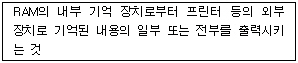
- RAM 디스크
- Speed 디스크
- RAM 더블러
- RAM 덤프
(정답률: 46%)
12. 다음 중 객체지향 프로그래밍의 특성으로 옳지 않은 것은?
- 소프트웨어 재사용성으로 프로그램 개발 시간이 단축할 수 있다.
- 상속성, 은폐성, 다형성, 캡슐화 등의 특징을 가진다.
- 절차적 프로그램 개발에 적합한 기법이다.
- Smalltalk, C++, Java 언어 등에서 객체 지향이 개념을 잘 표현하고 있다.
(정답률: 55%)
13. 다음 중 특정한 목적을 위한 작은 컴퓨터 시스템으로 하드웨어와 소프트웨어가 하나로 조합되어 있고 2차 저장장치를 갖지 않는 시스템을 무엇이라 하는가?
- 분산처리 시스템
- 다중처리 시스템
- 일괄처리 시스템
- 임베디드 시스템
(정답률: 63%)
14. 다음 중 Windows XP에서 시스템 도구로 사용되는 [디스크 조각 모음]에 관한 설명으로 옳지 않은 것은?
- [디스크 조각 모음] 작업을 수행하려면 컴퓨터 관리자 계정이 필요하다.
- 조각난 파일이나 폴더가 볼륨에서 각각 하나의 인접한 공간을 차지하도록 컴퓨터 하드 디스크의 조각난 파일과 폴더를 통합한다.
- [디스크 조각 모음]의 실행 결과로 시스템은 파일과 폴더에 빠르게 액세스할 수 있고 새 파일과 폴더를 더 효과적으로 저장할 수 있다.
- [디스크 조각 모음]을 이용하여 하드디스크의 조각난 파일이나 폴더를 통합할 때 볼륨의 여유 공간도 통합되기 때문에 새 파일이 조각날 가능성이 높아진다.
(정답률: 71%)
15. 다음 중 컴퓨터 통신 장비와 관련하여 더미 허브(Dummy HUB) 장비에 관한 설명으로 가장 적합한 것은?
- 데이터 전송의 최적의 경로를 설정하는데 사용된다.
- 네트워크에 연결된 각 노드를 버스(Bus) 구조로 연결하기 위하여 사용된다.
- LAN이 보유한 대역폭을 컴퓨터 수만큼으로 나누어 제공하는 단점이 있다.
- 스위칭 허브라고도 한다.
(정답률: 40%)
16. 다음 중 인터넷 전자우편과 관련하여 MIME(Multipurpose Internet Mail Extensions)에 관한 설명으로 옳은 것은?
- HTML 문서를 송수신하기 위한 프로토콜이다.
- 전자우편을 받을 때 사용하는 서버이다.
- 전자우편을 보낼 때 사용하는 서버이다.
- 멀티미디어 전자우편을 주고받기 위한 인터넷 메일의 표준이다.
(정답률: 69%)
17. 다음 중 컴퓨터 그래픽과 관련하여 벡터(Vector) 이미지에 관한 설명으로 옳지 않은 것은?
- 이미지의 크기를 확대하여도 화질에 손상이 없다.
- 점과 점을 연결하는 직선이나 곡선을 이용하여 이미지를 구성한다.
- 대표적으로 WMF 파일 형식이 있다.
- 픽셀로 이미지를 표현하며 레스터(Raster) 이미지라고도 한다.
(정답률: 72%)
18. 다음 중 컴퓨터 시스템에서 사용하는 채널(Channel)에 관한 설명으로 옳지 않은 것은?
- 주변장치에 대한 제어 권한을 CPU로 부터 넘겨받아 CPU 대신 입출력을 관리한다.
- 입출력 작업이 끝나면 CPU에게 인터럽트 신호를 보낸다.
- CPU와 주기억장치의 속도 차이를 해결하기 위하여 사용된다.
- 채널에는 셀렉터(Selector), 멀티플랙서(Multiplexer), 블록 멀티플랙서(Block Multiplexer) 등이 있다.
(정답률: 52%)
19. 다음 중 한글 Windows XP에서 [시작]- [실행]에서 ‘msconfig' 를 입력한 후 [확인] 버튼을 클릭하여 나타나는 시스템 구성 유틸리티에서 볼 수 있는 메뉴가 아닌 것은?
- BOOT.INI
- 서비스
- 시작프로그램
- 종료프로그램
(정답률: 40%)
20. 다음 중 컴퓨터에서 사용되는 펌웨어(Firmware)에 대한 설명으로 옳지 않은 것은?
- 하드웨어의 동작을 지시하는 소프트웨어이지만 하드웨어적으로 구성되어 하드웨어의 일부분으로도 볼 수 있는 제품을 말한다.
- 하드웨어 교체 없이 소프트웨어 업그레이드만으로 시스템의 성능을 높이기 위한 목적으로 사용되면 하드웨어와 소프트웨어의 중간에 해당한다.
- 시스템 효율을 높이기 위해 RAM에 저장되어 관리되므로 휘발성이다.
- 기계어 처리, 데이터 전송, 부동 소수점 연산, 채널 제어 등의 처리 루틴을 가지고 있다.
(정답률: 70%)
2과목: 스프레드시트 일반
21. 다음 중 항목의 구성비를 표현하는데 적합한 차트인 원형차트 및 도넛형 차트에 대한 설명으로 틀린 것은?
- 원형 차트의 모든 조각을 차트 중심에서 끌어낼 수 있다.
- 도넛형 차트에서는 바깥쪽 고리의 조각만 끌어낼 수 있다.
- 원형 차트에서는 첫째 조각의 각을 0도에서 180도 사이의 값을 이용하여 회전시킬 수 있다.
- 도넛형 차트의 구성 크기 변경 값은 10%에서 90% 사이의 값이다.
(정답률: 43%)
22. 다음 중 정렬에 관한 설명 중 옳지 않은 것은?
- 정렬 기준을 여러 개 지정하여 정렬이 가능하다.
- 행을 정렬할 때 숨겨진 열에 있는 데이터도 정렬된다.
- 정렬은 기본적으로 위에서 아래로 행들을 정렬시킨다.
- 사용자 지정에서‘TOP10’을 선택하면 상위 10위까지만 정렬된다.
(정답률: 27%)
23. [A2:C4]까지 범위를 선택한 후 조건부 서식을 아래와 같이 설정하였다. 다음 설명 중 맞는 것은?
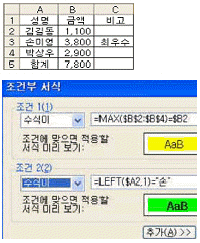
- [A3:C3]셀이 조건부 서식 조건1에 설정된 서식으로 바뀐다.
- [B3]셀이 조건부 서식의 조건1에 설정된 서식으로 바뀐다.
- [A3:C3]셀이 조건부 서식의 조건2에 설정된 서식으로 바뀐다.
- [B3]셀이 조건부 서식의 조건2에 설정된 서식으로 바뀐다.
(정답률: 30%)
24. 다음 시트의 [F2]셀에 총점이 큰 값을 기준으로 순위를 구한 후 채우기 핸들을 이용하여 [F5] 셀까지 드래그하려고 한다. 다음 중 [F2] 셀의 수식으로 옳은 것은?
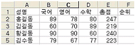
- =RANK(E2,$E$2:$E$5)
- =RANK($E$2,$E$2:$E$5)
- =RANK(E2,E2:E5)
- =RANK(E2,E2:$E$5)
(정답률: 59%)
25. 데이터의 범위가 [A1:K20]이고 한 페이지에 인쇄되는 범위가 [A1:J12]로 설정되어 있을 때 한 페이지에 모두 출력하도록 하기 위한 속성 설정으로 올바른 것은?
- [축소 확대/배율]을 100%로 한다.
- [자동 맞춤]의 용지 너비를 ‘1’로하고 [용지 높이]를 공백으로 한다.
- [자동 맞춤]의 용지 너비를 공백으로 하고 [용지 높이]를 ‘1’로 한다.
- [자동 맞춤]의 용지 너비를 ‘1’로하고 [용지 높이]를 ‘1’로 한다.
(정답률: 60%)
26. 다음은 보조 축을 이용하는 차트에 대한 설명이다. 설명이 잘못된 것은?
- 이중 차트는 차트에 또 하나의 값 축을 추가하여 이중으로 값을 표시하는 차트이다.
- 이중 차트에서 오른쪽에 나타나는 눈금이 기본 축이고, 왼쪽에 나타나는 눈금이 보조 축이다.
- 이중 차트는 특정 데이터 계열 값의 범위가 다른 데이터 계열과 현저하게 차이가 날 때 사용하는 차트이다.
- 혼합형 차트는 두 종류 이상의 차트를 사용하여 차트에 다른 정보가 들어 있음을 강조하는 경우에 사용하는 차트이다.
(정답률: 55%)
27. 다음 중 매크로 이름 정하기에 관한 설명으로 옳지 않는 것은?
- 매크로 이름의 첫 번째 글자는 숫자가 아닌 문자여야만 한다.
- 매크로 이름의 두 번째부터는 숫자를 사용할 수 있다.
- 매크로 이름에는 공백을 사용할 수 없다.
- 매크로 이름에는 밑줄을 사용할 수 없다.
(정답률: 47%)
28. 다음 중 수식에 대한 설명으로 옳은 것은?
- =IF(AND(B2>=40, C2>=40, D2>=60),“합격“,”불합격“) [B2] 와 [C2] 셀의 값이 40 초과이고 [D2] 셀의 값이 60 초과이면 ”합격“ 그렇지 않으면 ”불합격“
- =IF(OR(C2>=40, D2>=60),“합격”,“불합격”) [C2]셀의 값이 40이상이거나 [D2] 셀의 값이 60이상이면 “합격”, 그렇지 않으면 “불합격”
- =IF(AND(B2,C2)>=40,D2>60),“합격”,“불합격”) [B2]와 [C2] 셀의 값이 40 초과이고, [D2] 셀의 값이 60초과이면 “합격” 그렇지 않으면“불합격”
- =AND(IF(B2>=40, C2>=40, D2>=60),“합격”,“불합격”) [B2] 와 [C2] 셀의 값이 40 이상이거나 [D2] 셀의 값이 60이상이면 “합격” 그렇지 않으면 “불합격”
(정답률: 63%)
29. 데이터 통합 작업을 설정하려고 한다. 다음 중 데이터 통합에 대한 설명으로 옳지 않은 것은?
- 참조 : 통합할 데이터 영역을 지정한다.
- 모든 참조 영역 : 지정한 모든 참조 영역이 표시된다.
- 함수 : 동일 참조 영역에 대하여 2개 이상의 함수를 적용할 수 있다.
- 왼쪽 열 : 참조된 데이터 범위의 왼쪽 열을 통합된 데이터의 첫 열로 사용한다.
(정답률: 45%)
30. 다음 Visual Basic 편집창에 나타난 내용에 대한 설명으로 옳지 않은 것은?
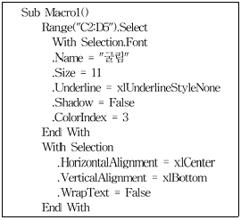
- 글꼴을 굴림으로 지정
- 폰트 크기를 11로 지정
- 밑줄을 실선으로 지정
- 텍스트 맞춤은 세로 아래쪽으로 지정
(정답률: 54%)
31. 다음 중 페이지 나누기에 관한 설명으로 옳지 않은 것은?
- [페이지 나누기 미리 보기] 상태에서 [기본] 보기로 전환하여도 각 페이지를 구분하는 페이지 나누기 선을 표시해 줄 수 있다.
- [페이지 나누기 미리 보기] 상태에서 페이지 나누기 선을 마우스로 드래그하면 셀의 크기가 조절된다.
- [페이지 나누기 미리보기] 상태에서 강제로 페이지를 구분하려면 페이지를 구분할 셀을 선택하고 바로 가기 메뉴의 [페이지 나누기 삽입]을 클릭하면 된다.
- [페이지 나누기 미리 보기] 상태에서도 데이터의 입력이나 편집을 할 수 있다.
(정답률: 38%)
32. 다음 중 엑셀은 종료하지 않고 현재 활성화된 통합 문서 창을 닫는 VBA 구문을 작성한 것으로 옳은 것은?
- Sub Test1()
ActiveWorkbook.NewWindow
End Sub - Sub Test1()
Application.Quit
End Sub - Sub Test1()
Workbooks.Close
End Sub - Sub Test1()
ActiveWindows.Close
End Sub
(정답률: 52%)
33. 다음 차트에 대한 설명으로 옳지 않은 것은?
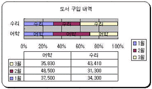
- 차트 영역에 그림자가 설정되어 있고 테두리의 모서리가 둥글게 설정되어 있다.
- 데이터 테이블과 범례가 표시되어 있다.
- 차트의 제목은 ‘도서 구입 내역’으로 설정되어 있다
- 데이터 레이블로 ‘값’이 표시되어 있다.
(정답률: 56%)
34. 아래의 시트에서 [A8] 셀에 다음과 같이 수식을 입력했을 때의 계산 결과 값으로 옳은 것은?
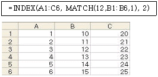
- 12
- 3
- 14
- 20
(정답률: 47%)
35. 다음 중 시나리오에 대한 설명으로 옳지 않은 것은?
- 시나리오는 별도의 파일로 저장하고 자동으로 바꿀 수 있는 값의 집합이다.
- 시나리오를 사용하여 워크시트 모델의 결과를 예측할 수 있다.
- 여러 시나리오를 비교하기 위해 시나리오를 한 페이지의 피벗 테이블로 요약할 수 있다.
- 시나리오, 요약 보고서를 만들 때는 결과 셀이 없어도 되지만, 시나리오 피벗 테이블 보고서에는 결과 셀을 반드시 지정해야 한다.
(정답률: 37%)
36. 다음 중 입력 데이터가 ‘3275806’이고 [셀 서식]의 표시형식은 ‘###0,’으로 설정되었을 때 표시되는 값으로 옳은 것은?
- 3,275
- 3275
- 3276
- 3,276
(정답률: 47%)
37. 다음 중 도형 작성에 대한 설명으로 옳은 것은?
- [Ctrl]키를 누른 채 수직/수평 방향이 아닌 다른 방향으로 마우스를 드래그하면 15° 간격으로 선이 그려진다.
- 원을 그릴 때 [Shift]키를 누르고 그리면 반지름이 모두 같은 원이 그려진다.
- [Shift]키를 누른 채 도형을 그리면 셀의 크기에 도형이 맞추어져서 그려진다.
- [Alt]키를 누른 채 도형을 그리면 중심에서 바깥쪽으로 그려진다.
(정답률: 41%)
38. 다음 중 외부 데이터베이스의 데이터를 가져오기 위한 쿼리 마법사의 설명으로 옳지 않은 것은?
- 원본 데이터에서 쿼리에 포함시킬 데이터 열을 선택할 수 있다.
- 데이터를 필터할 때 포함할 행의 조건을 지정하여 필터 할 수 있다.
- 데이터의 정렬 방법도 기준을 정하여 정렬할 수 있다.
- 새 쿼리를 만들때 통합문서를 동시에 여러개 선택하여 만들 수 있다.
(정답률: 59%)
39. 다음 시트에서 “판매1부”의 평균수량을 배열 수식을 이용하여 계산하였다. [D10] 셀에 표시되는 수식으로 옳은 것은?
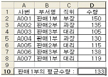
- {=IF(AVERAGE(C2:D8="판매1부", D2:D8))}
- {=IF(AVERAGE(B2:B8=A10,D2:D8))}
- {=AVERAGE(IF(C2:D8="판매1부", D2:D8))}
- {=AVERAGE(IF(B2:B8=LEFT(A10,4),D2:D8))}
(정답률: 44%)
40. [표1]과 [표2]를 이용하여 [표3]의 최대실적품명을 계산하려고 한다. 다음 중 [B15] 셀의 함수식으로 옳은 것은?
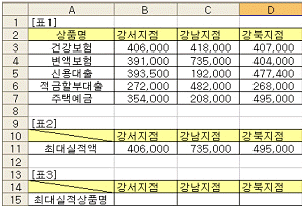
- =DGET($A$2:$D$7,1,B10:B11)
- =LOOKUP($A$2:$D$7,1,B10:B11)
- =INDEX($A$2:$D$7,1,B10:B11)
- =MATCH($A$2:$D$7,1,B10:B11)
(정답률: 33%)
3과목: 데이터베이스 일반
41. 다음 중 Recordset 개체가 가지고 있는 메서드에 속하지 않는 것은?
- Update
- Seek
- State
- Addnew
(정답률: 35%)
42. 다음은 [성적]과 [학생] 테이블에 대한 테이블 디자인이다. 다음의 테이블을 이용한 1학년 1반 학생들의 학번, 과목, 점수를 조회하는 질의로 가장 올바른 것은?
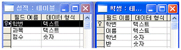
- select 학번, 과목, 점수 from 성적 where 학년=1 and 반=1
- select 학번, 과목, 점수 from 성적 where 학번 in (select 학번 from 학생 where 학년=1 and 반=1)
- select 학번, 과목, 점수 from 학생 where 학년=1 and 반=1
- select 학번, 과목, 점수 from 학생 where 학번 in (select 학번 from 학생 where 학년=1 and 반=1)
(정답률: 44%)
43. 다음 보기 프로그램이 수행되었을 때 Sum의 값으로 옳은 것은?
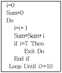
- 28
- 45
- 55
- 21
(정답률: 42%)
44. 다음 중 테이블 필드의 조회 기능 설정에 대한 설명으로 옳지 않은 것은?
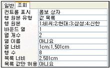
- 문제에서 주어진 대로 설정한 경우, 콤보상자는 옆의 그림과 같은 형태로 표시되고, 필드에는 1, 2, 3, 4등이 저장된다.
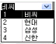
- ‘바운드 열’을 2로 수정하면, 콤보상자는 옆의 그림과 같은 형태로 표시되면 필드에는 ‘비씨’,‘현대’,‘삼성’,‘신한’등이 저장된다.
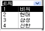
- ‘열 너비’를 0cm;1.503cm 와 같이 수정하면, 콤보상자는 옆의 그림과 같은 형태로 표시되면 필드에는 ‘비씨’,‘현대’,‘삼성’,‘신한’ 등이 저장된다.
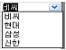
- 문제에서 주어진 대로 설정한 경우, 목록에 나타나지 않은 값(예를 들어 5)을 직접 입력하여 저장할 수 있다.
(정답률: 41%)
45. 기본 키(Primary Key)로 사용되는 필드 또는 필드 집합은 몇 가지 특징이 있다. 다음 중 특징에 대한 설명으로 옳지 않은 것은?
- 기본 키 필드는 각 행을 고유하게 식별할 수 있도록 중복된 값이 입력되어서는 안 된다.
- 기본 키 필드는 Null 값이 들어 있어서는 안 된다.
- 기본 키 필드의 값은 다른 테이블에서 참조될 수 있으므로 변경되어서는 안 된다.
- 데이터 형식이 OLE 개체인 것은 기본 키로 지정할 수 없다.
(정답률: 48%)
46. 다음 납품내역관리 폼의 거래처코드(txt거래처코드)에 대한 거래처명(txt거래처명)을 [거래처] 테이블을 이용하여 표시하려고 한다. 다음 중 거래처명(txt거래처명)을 구하는 함수식으로 옳은 것은?
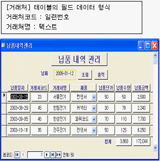
- =DLookUp(“거래처명”, “거래처”, “거래처코드 = ” & [txt거래처코드])
- =DLookUp(거래처, 거래처명, 거래처코드 =& [txt거래처코드])
- =DLookUp(“거래처명”, “거래처”, “거래처코드 = ”&[txt거래처코드]& “ ”)
- =DLookUp(거래처명, 거래처, “거래처코드 = ” & [txt거래처코드])
(정답률: 36%)
47. 다음 중 개체관계(EntityRelationship) 모델에 대한 설명으로 가장 옳지 않은 것은?
- 데이터베이스를 구성하는 개체와 이들간의 관계를 개념적으로 표시한 모델이다.
- 개체 관계도에서 타원은 개체 타입을 나타내며, 사각형은 속성을 의미한다.
- E-R 모델에서 정의한 데이터를 관계형 데이터베이스에 저장하기 위해서는 각각의 개체를 테이블로 변환시켜야 한다.
- E-R 모델에서 속성은 관계형 데이터 모델에서 필드로 변환된다.
(정답률: 53%)
48. 회원(회원번호, 이름, 나이, 주소) 테이블에서 회원수가 몇 명인가를 알아보기 위한 질의문으로 옳은 것은? 단, 회원번호는 [회원] 테이블의 기본키이다.
- select count(*) as 회원수 from 회원
- select sum(회원번호) as 회원수 from 회원
- insert count(회원번호) as 회원수 from 회원
- insert sum(*) as 회원수 from 회원
(정답률: 52%)
49. 다음 구매(구매일자, 사번, 제품번호, 구매수량) 테이블을 레코드 원본으로 하는 폼의 바닥글에 ‘구매수량’의 평균이 표시되도록 하기 위한 텍스트 상자의 컨트롤 원본 속성으로 가장 옳지 않은 것은?<단, ‘구매수량’ 필드에는 모두 값이 입력되어 있다.>
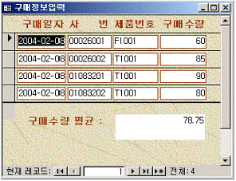
- =Avg([구매수량])
- =Avg([구매수량])/Count([구매수량])
- =Sum([구매수량])/Count([구매수량])
- =Sum([구매수량])/Count(*)
(정답률: 52%)
50. 직원(사원번호, 부서명, 이름, 나이, 근무년수, 급여) 테이블에서 ‘근무년수’가 3이상인 직원들을 나이가 많은 순서대로 조회하되, 같은 나이일 경우 급여의 오름차순으로 모든 필드을 나타내는 질의문으로 옳은 것은?
- select * from 직원 where 근무년수 >=3 order by 나이, 급여
- select * from 직원 order by 나이, 급여 where 근무년수 >=3
- select * from 직원 order by 나이 desc, 급여 asc where 근무년수 >=3
- select * from 직원 where 근무년수 >=3 order by 나이 desc, 급여 asc
(정답률: 54%)
51. 다음은 보고서 작성시 텍스트 상자(textbox)의 속성에 대한 설명이다. 가장 관련 있는 속성으로 옳은 것은?
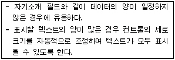
- 텍스트 맞춤
- 형식
- 테두리 스타일
- 확장 가능
(정답률: 31%)
52. 다음 중 보고서의 영역(section)에 대한 설명으로 옳지 않은 것은?
- 보고서 머리글은 보고서의 첫 페이지에 한번만 인쇄된다.
- 그룹 머리글은 그룹별 요약 정보 등을 표시한다.
- 그룹 머리글이나 바닥글은 보고서의 ‘속성’창에서 설정한다.
- 페이지 바닥글은 매 페이지의 아랫부분에 표시된다.
(정답률: 45%)
53. 다음 보고서에 대한 설명으로 옳은 것은? 단, 보고서는 전체 7페이지이며, 현재 페이지는 4페이지이다.
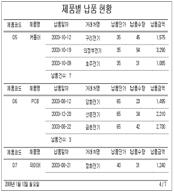
- ‘제품별 납품 현황’을 표시하는 제목은 보고서 머리글에 작성하였다.
- ‘제품코드’ 및 ‘납품일자’를 기준으로 정렬하였다.
- ‘제품코드’에 대한 그룹 머리글과 그룹 바닥글을 모두 만들었다.
- ‘제품코드’와 ‘제품명’을 표시하는 컨트롤의 ‘중복 내용 숨기기’ 속성을 ‘아니오’로 설정하였다.
(정답률: 32%)
54. 다음 중 탭 순서에서 제외되는 컨트롤은 무엇인가?
- 텍스트 상자
- 콤보 상자
- 레이블
- 명령 단추
(정답률: 45%)
55. 다음의 [거래처]와 [매출] 테이블을 조인하여 질의를 수행한 결과에 대한 설명으로 가장 옳지 않은 것은?
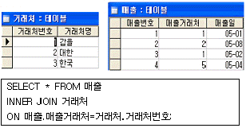
- 조회 결과의 필드수는 5개이다.
- 조회 결과의 레코드수는 4개이다.
- 거래처 번호 3에 대한 매출 정보는 나타나지 않는다.
- 매출번호 4에 대한 매출 정보는 나타나지 않는다.
(정답률: 34%)
56. 다음 중 보고서의 ‘페이지 설정’에 대한 설명 중 가장 옳지 않은 것은?
- 보고서마다 인쇄될 용지의 여백을 다르게 지정할 수 있다.
- ‘데이터만 인쇄’ 항목을 선택하면 선이나 레이블과 같은 항목들은 인쇄하지 않고 데이터만을 인쇄하므로 미리 만들어진 양식 종이를 이용할 수 있다.
- 보고서마다 인쇄될 용지의 방향과 크기를 다르게 지정할수 있다.
- 보고서를 파일로 인쇄하도록 지정할 수 있다.
(정답률: 32%)
57. [관계 편집] 대화상자에서 다음 그림과 같이 설정한 경우에 대한 설명으로 가장 옳지 않은 것은?
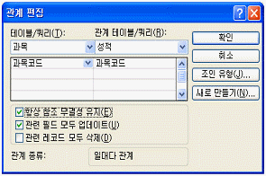
- [과목] 테이블에 존재하는 ‘과목코드’ 값을 갖는 [성적]테이블을 삭제해도 참조무결성을 해치지 않는다.
- [과목] 테이블에 레코드를 추가하는 것은 참조 무결성을 해치지 않는다.
- [과목] 테이블에서 참조하고 있는 [성적] 테이블의 레코드는 삭제할 수 있다.
- [과목] 테이블의 ‘과목코드’ 필드 값을 변경하면 이를 참조하는 [성적]테이블의 ‘과목코드’ 필드 값도 모두 변경된다.
(정답률: 35%)
58. 다음과 같은 이벤트 프로시져에 대한 설명 중 옳지 않은 것은? (단, 단추는 텍스트는 ‘cmd정지’로 표시)
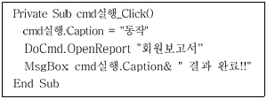
- 이름이 ‘cmd실행’인 컨트롤을 클릭했을 때 이 프로시저가 수행된다.
- ‘cmd실행’ 컨트롤의 캡션에 “동작”이 표시된다.
- “회원보고서”라는 보고서가 인쇄된다.
- “회원보고서 결과 완료!!”라는 내용이 적힌 메시지 창이 나타난다.
(정답률: 38%)
59. [회원] 테이블에서 ‘등록일자’ 필드에 2009년 1월1일부터 2009년 12월 31까지의 날짜만 입력되도록 하는 유효성 검사 규칙으로 옳은 것은?
- in (#2009/01/01#m #2009/12/31#)
- between #2009/01/01# and #2009/12/31#
- in (#2009/01/01#-#2009/12/31#)
- between #2009/01/01# or #2009/12/31#
(정답률: 64%)
60. 다음 폼의 ‘기본 보기’ 속성으로 가장 적절한 것은?(단, 이 폼에는 하위 폼이 들어 있지 않다.)
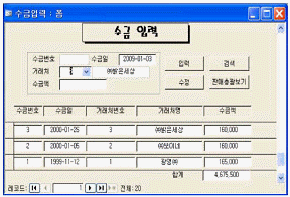
- 단일 폼
- 데이터 시트
- 연속 폼
- 피벗 테이블
(정답률: 42%)